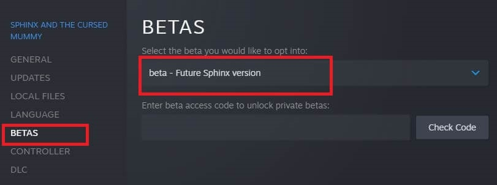
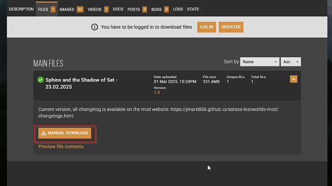

How to play
The mod is available in three versions: Mod DB, Steam Workshop and Nexus Mods. We highly recommend the Steam version, as it provides automatic updates, ensuring you always have the latest improvements and bug fixes without any extra steps.
If you choose the Mod DB or Nexus Mods version, keep in mind that you will need to manually launch the mod each time by running a .cmd launcher file. While both versions offer the full experience, the Steam Workshop edition offers a more seamless and hassle-free way to enjoy the mod.
Steam Workshop (automatic updates)
-
Join the special beta-testing Workshop group for the game, so that you can actually see the Workshop tab and page in the next step.

-
Ensure that you are logged-in and subscribe to the Workshop version of the mod.

-
If the game is installed, then the mod should start to download right away. In your Steam Library right-click the Sphinx entry, select Properties, a dialog will open.

-
Click on Launch options...

...then paste the following code in the input box that appears, and accept.

-mod "../../workshop/content/606710/1614156774"
Copied!
-
If you are playing the latest version of the mod you need to switch your game version to the beta Steam branch instead of the default one, as that one tends to get the engine fixes and features this mod needs to work first. While in the game Properties window go to the Betas tab, choose the beta - Future Sphinx version entry in the combobox, then this time around the base game should update itself after closing the Properties window.
 -
Run the game, the mod should start. To disable the mod, just remove the launch options you added in the fourth step and the game will run as normal.
Mod DB (Manually-downloaded version, for Steam or GOG)
-
Download the latest mod .zip file from Mod DB.

-
Extract the compressed files anywhere into its own folder.

-
Start the mod by double-clicking on launch-sphinx-mod.cmd, if the game is already installed it will start with the mod right away without changing anything in the filesystem, you can still play the base game normally. If you want, you can also create a desktop shortcut for the tiny mod launcher.

Nexus Mods (Manually-downloaded version, for Steam or GOG)
-
Download the latest mod .zip file from Nexus Mods.
 -
Extract the compressed files anywhere into its own folder.
-
Start the mod by double-clicking on launch-sphinx-mod.cmd, if the game is already installed it will start with the mod right away without changing anything in the filesystem, you can still play the base game normally. If you want, you can also create a desktop shortcut for the tiny mod launcher.